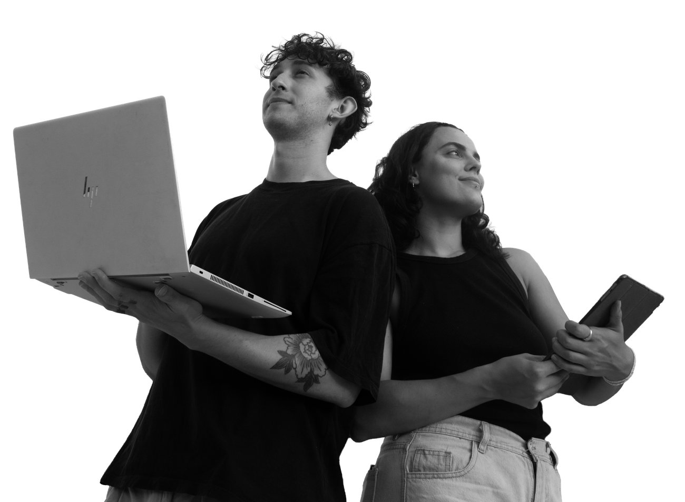

Amalia Gross
Licenciada en Comunicación Social con más de 2 años de experiencia en agencias de comunicación y marketing. Lidera la estrategia de contenido, la planificación del calendario y los copies de cada marca.
Somos una dupla que combina comunicación estratégica y diseño digital. Juntos cubrimos todo el recorrido: desde pensar el contenido de tus redes hasta construir el sitio donde vive tu marca.

Licenciada en Comunicación Social con más de 2 años de experiencia en agencias de comunicación y marketing. Lidera la estrategia de contenido, la planificación del calendario y los copies de cada marca.
Diseñador Digital con más de 5 años de experiencia y más de 1 año en diseño UX/UI. Se ocupa del diseño de las piezas, la identidad visual y el desarrollo web de cada proyecto.